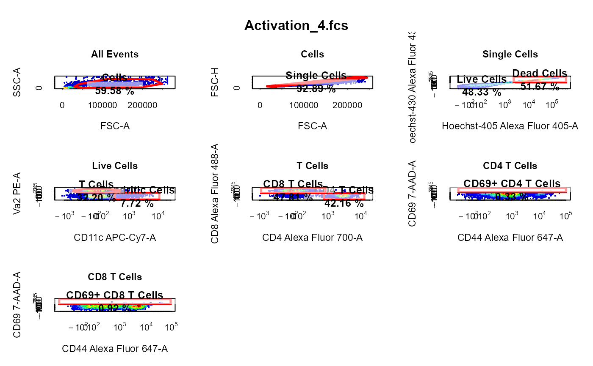
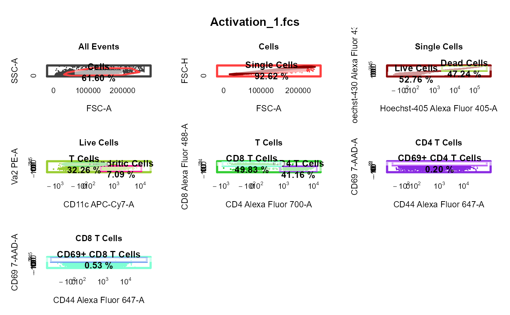

cyto_plot_gating_scheme automatically plots the entire gating scheme
and has full support for gate tracking and back-gating through
gate_track and back_gate.
# S3 method for GatingSet cyto_plot_gating_scheme( x, gatingTemplate = NULL, group_by = "name", back_gate = FALSE, gate_track = FALSE, show_all = FALSE, header, popup = FALSE, layout = NULL, point_col = NA, label_text_size = 0.8, gate_line_col = "red", legend = TRUE, legend_text = NULL, legend_text_size = 1.2, header_text_font = 2, header_text_size = 1, header_text_col = "black", border_line_width = NULL, border_line_col = "black", title_text_col = "black", ... ) # S3 method for GatingHierarchy cyto_plot_gating_scheme( x, gatingTemplate = NULL, back_gate = FALSE, gate_track = FALSE, show_all = FALSE, header, popup = FALSE, layout, point_col = NA, label_text_size = 0.8, gate_line_col = "red", legend = TRUE, legend_text, legend_text_size = 1.2, header_text_font = 2, header_text_size = 1, header_text_col = "black", border_line_width, border_line_col = "black", title_text_col = "black", ... )
Arguments
| x | object of class
|
|---|---|
| gatingTemplate | name of the gatingTemplate csv file used to gate
|
| group_by | a vector of pData variables to sort and merge samples into groups prior to plotting, set to "name" by default to plot each sample separately. |
| back_gate | names of the population(s) to back-gate, set to |
| gate_track | logical indicating whether gate colour should be tracked throughout gating scheme, set to TRUE by default. |
| show_all | logical indicating whether every population should be
included in every plot in the gating scheme, set to |
| header | character string to use as the header for the plot layout, set to "Gating Scheme" by default. |
| popup | logical indicating whether the gating scheme should be plotted in a pop-up window, set to FALSE by default. |
| layout | a vector of the length 2 indicating the dimensions of the grid
for plotting |
| point_col | colour of points in 2D plots set to NA to use default red-blue colour scale. Control the colour of overlays by supplying multiple colours to this argument (e.g. c("blue","red")). |
| label_text_size | numeric to control the size of text in the plot labels, set to 0.8 by default. |
| gate_line_col | colour to use for gate borders, set to "red" by default. |
| legend | logical indicating whether a legend should be included when an overlay is supplied. |
| legend_text | vector of character strings to use for legend when an overlay is supplied. |
| legend_text_size | character expansion for legend text, set to 1.2 by default. |
| header_text_font | numeric to control the font of the header, set to 2 by default for bold font. |
| header_text_size | numeric to control the size of the header text, set to 1 by default. |
| header_text_col | colour to use for header text, set to "black" by default. |
| border_line_width | line width for plot border, set to 3 when gate_track is TRUE. |
| border_line_col | line colour for plot border, set to "black" by default. |
| title_text_col | colour to use for title text, set to "black" by default. |
| ... | extra arguments passed to |
Examples
library(CytoExploreRData) # Load in samples fs <- Activation gs <- GatingSet(fs) # Apply compensation gs <- cyto_compensate(gs) # Transform fluorescent channels gs <- cyto_transform(gs)#># Gate using cyto_gate_draw gt <- Activation_gatingTemplate gt_gating(gt, gs)#>#>#>#>#>#>#>#>#>#>#>#>#>#>#>#>#>#>#>#>#>#>#>#>#>#>#>#>#>#>#>#>#>#>#>#>#>#>#>#># Gating scheme cyto_plot_gating_scheme(gs[[4]])# Back-gating cyto_plot_gating_scheme(gs[[32]], back_gate = TRUE )# Gate-tracking cyto_plot_gating_scheme(gs[1:2], gate_track = TRUE )